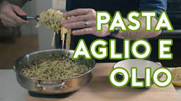

Pasta Aglio e Olio Recipe

Description
This is a recipe for Pasta Aglio e Olio, an Italian classic pasta dish. This is meant to be simple and easy,
providing a great entry point to italian cuisine. The original recipe can be found on Andrew Rea's
website.
Ingredients
- 1/2 head garlic, separated and peeled
- 1/2 cup flat-leaf parsley, rinsed and finely chopped
- 1/2 cup good quality olive oil
- 1 tsp red pepper flakes
- 1/2 pound dry linguine
- 1/2 lemon
- Salt and pepper to taste
Procedure
- Heavily salt a large pot of water, and bring to a boil. Cook pasta until slightly underdone while completing the steps below.
- Slice the garlic cloves thinly, and set aside. Heat olive oil in a large sauté pan over medium heat until barely shimmering.
Add sliced garlic, stirring constantly, until softened and turning golden on the edges. Add the red pepper flakes and lower the heat to medium-low.
- Add the pasta, drained, with about 1/4 cup reserved pasta cooking water. Squeeze lemon juice over top, and mix into the pasta with the fresh parsley.
If sauce is too watery, continue to cook for 1-3 minutes, until pasta has absorbed more liquid. Season with salt and pepper, and serve.